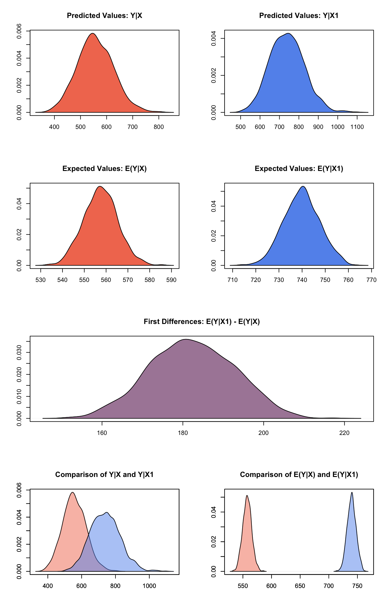

Built using Zelig version 5.1.1.90000
Gamma Regression for Continuous, Positive Dependent Variables with gamma.survey.
Use the gamma regression model if you have a positive-valued dependent variable such as the number of years a parliamentary cabinet endures, or the seconds you can stay airborne while jumping. The gamma distribution assumes that all waiting times are complete by the end of the study (censoring is not allowed).
Attach sample data and variable names:
data(api, package="survey")In this example, we will estimate a model using the percentages of students who receive subsidized lunch and an indicator for whether schooling is year-round to predict California public schools’ academic performance index scores:
z.out1 <- zelig(api00 ~ meals + yr.rnd, model = "gamma.survey",
weights = ~pw, data = apistrat)## How to cite this model in Zelig:
## Nicholas Carnes. 2017.
## gamma-survey: Gamma Regression with Survey Weights
## in Christine Choirat, Christopher Gandrud, James Honaker, Kosuke Imai, Gary King, and Olivia Lau,
## "Zelig: Everyone's Statistical Software," http://zeligproject.org/summary(z.out1)## Model:
##
## Call:
## z5$zelig(formula = api00 ~ meals + yr.rnd, data = apistrat, weights = ~pw)
##
## Survey design:
## survey::svydesign(data = data, ids = ids, probs = probs, strata = strata,
## fpc = fpc, nest = nest, check.strata = check.strata, weights = localWeights)
##
## Coefficients:
## Estimate Std. Error t value Pr(>|t|)
## (Intercept) 1.128e-03 1.560e-05 72.314 <2e-16
## meals 7.928e-06 4.391e-07 18.056 <2e-16
## yr.rndYes 5.113e-05 4.449e-05 1.149 0.252
##
## (Dispersion parameter for Gamma family taken to be 0.3836199)
##
## Number of Fisher Scoring iterations: 4
##
## Next step: Use 'setx' methodSet explanatory variables to their default (mean/mode) values, and set a high (80th percentile) and low (20th percentile) value for “meals,” the percentage of students who receive subsidized meals:
x.low <- setx(z.out1, meals= quantile(apistrat$meals, 0.2))
x.high <- setx(z.out1, meals= quantile(apistrat$meals, 0.8))Generate first differences for the effect of high versus low “meals” on academic performance:
s.out1 <- sim(z.out1, x=x.high, x1=x.low)
summary(s.out1)##
## sim x :
## -----
## ev
## mean sd 50% 2.5% 97.5%
## [1,] 582.7601 7.921319 582.6495 568.0145 598.4627
## pv
## mean sd 50% 2.5% 97.5%
## [1,] 580.7022 372.2473 499.5856 101.8357 1529.045
##
## sim x1 :
## -----
## ev
## mean sd 50% 2.5% 97.5%
## [1,] 786.7721 6.821552 786.6617 773.1634 800.1334
## pv
## mean sd 50% 2.5% 97.5%
## [1,] 778.3914 505.7795 675.047 124.1773 1958.094
## fd
## mean sd 50% 2.5% 97.5%
## [1,] 204.012 9.939606 203.8514 184.0507 223.0171Generate a second set of fitted values and a plot:
plot(s.out1)Graphs of Quantities of Interest for Gamma Survey
Suppose that the survey house that provided the dataset excluded probability weights but made other details about the survey design available. We can still estimate a model without probability weights that takes instead variables that identify each the stratum and/or cluster from which each observation was selected and the size of the finite sample from which each observation was selected.
z.out2 <- zelig(api00 ~ meals + yr.rnd, model = "gamma.survey",
strata=~stype, fpc=~fpc, data = apistrat)## How to cite this model in Zelig:
## Nicholas Carnes. 2017.
## gamma-survey: Gamma Regression with Survey Weights
## in Christine Choirat, Christopher Gandrud, James Honaker, Kosuke Imai, Gary King, and Olivia Lau,
## "Zelig: Everyone's Statistical Software," http://zeligproject.org/summary(z.out2)## Model:
##
## Call:
## z5$zelig(formula = api00 ~ meals + yr.rnd, data = apistrat, strata = ~stype,
## fpc = ~fpc)
##
## Survey design:
## survey::svydesign(data = data, ids = ids, probs = probs, strata = strata,
## fpc = fpc, nest = nest, check.strata = check.strata, weights = localWeights)
##
## Coefficients:
## Estimate Std. Error t value Pr(>|t|)
## (Intercept) 1.162e-03 1.472e-05 78.980 <2e-16
## meals 7.859e-06 4.276e-07 18.380 <2e-16
## yr.rndYes 2.807e-05 4.392e-05 0.639 0.523
##
## (Dispersion parameter for Gamma family taken to be 0.01251498)
##
## Number of Fisher Scoring iterations: 4
##
## Next step: Use 'setx' methodNote that these results are identical to the results obtained when pre-existing sampling weights were used. When sampling weights are omitted, Zelig estimates them automatically for “gamma.survey” models based on the user-defined description of sampling designs. If no description is present, the default assumption is equal probability sampling.
The methods setx()`` andsim()can then be run onz.out2` in the same fashion described in Example 1.
Suppose that the survey house that published these data withheld details about the survey design and instead published replication weights.
For the purpose of illustration, create a set of jk1 replicate weights:
library("survey")## Loading required package: grid## Loading required package: Matrix##
## Attaching package: 'survey'## The following object is masked from 'package:graphics':
##
## dotchartjk1reps <- jk1weights(psu=apistrat$dnum)Estimate the model regressing api00 on the “meals” “yr.rnd” variables.
z.out3 <- zelig(api00 ~ meals + yr.rnd, model = "gamma.survey",
data = apistrat, repweights=jk1reps$weights,
type="JK1")## How to cite this model in Zelig:
## Nicholas Carnes. 2017.
## gamma-survey: Gamma Regression with Survey Weights
## in Christine Choirat, Christopher Gandrud, James Honaker, Kosuke Imai, Gary King, and Olivia Lau,
## "Zelig: Everyone's Statistical Software," http://zeligproject.org/summary(z.out3)## Model:
##
## Call:
## z5$zelig(formula = api00 ~ meals + yr.rnd, data = apistrat, repweights = jk1reps$weights,
## type = "JK1")
##
## Survey design:
## survey::svydesign(data = data, ids = ids, probs = probs, strata = strata,
## fpc = fpc, nest = nest, check.strata = check.strata, weights = localWeights)
##
## Coefficients:
## Estimate Std. Error t value Pr(>|t|)
## (Intercept) 1.210e-03 1.858e-05 65.146 <2e-16
## meals 7.868e-06 4.658e-07 16.891 <2e-16
## yr.rndYes -6.263e-06 4.639e-05 -0.135 0.893
##
## (Dispersion parameter for Gamma family taken to be 0.01458664)
##
## Number of Fisher Scoring iterations: 4
##
## Next step: Use 'setx' methodSet the explanatory variable “meals” at high and low values
x.low <- setx(z.out3, meals= quantile(apistrat$meals, 0.2))
x.high <- setx(z.out3, meals= quantile(apistrat$meals, 0.8))Generate first differences for the effect of the high versus low concentrations of poverty on school performance
s.out3 <- sim(z.out3, x=x.high, x1=x.low)
summary(s.out3)##
## sim x :
## -----
## ev
## mean sd 50% 2.5% 97.5%
## [1,] 557.7079 7.9431 557.529 542.4628 573.5257
## pv
## mean sd 50% 2.5% 97.5%
## [1,] 555.9965 69.3922 553.1337 425.1246 700.4409
##
## sim x1 :
## -----
## ev
## mean sd 50% 2.5% 97.5%
## [1,] 739.7963 7.695778 739.8023 725.4739 755.3309
## pv
## mean sd 50% 2.5% 97.5%
## [1,] 742.6941 88.52467 740.4528 571.1378 921.2419
## fd
## mean sd 50% 2.5% 97.5%
## [1,] 182.0884 10.23062 181.9744 162.3653 201.8603Generate a second set of fitted values and a plot:
plot(s.out3)
The user should also refer to the gamma model demo, since gamma.survey models can take many of the same options as gamma models.
\[ \lambda_i = \frac{1}{x_i \beta} \]
\[ E(Y) = \alpha \lambda_i. \]
The predicted values (qi$pr) are draws from the gamma distribution for each given set of parameters \((\alpha, \lambda_i)\).
If x1 is specified, sim() also returns the differences in the expected values (qi$fd),
\[ E(Y \mid x_1) - E(Y \mid x) \]
.
\[ \frac{1}{\sum_{i=1}^n t_i}\sum_{i:t_i=1}^n \left\{ Y_i(t_i=1) - E[Y_i(t_i=0)] \right\}, \]
where \(t_i\) is a binary explanatory variable defining the treatment (\(t_i=1\)) and control (\(t_i=0\)) groups. Variation in the simulations are due to uncertainty in simulating \(E[Y_i(t_i=0)]\), the counterfactual expected value of \(Y_i\) for observations in the treatment group, under the assumption that everything stays the same except that the treatment indicator is switched to \(t_i=0\).
\[ \frac{1}{\sum_{i=1}^n t_i}\sum_{i:t_i=1}^n \left\{ Y_i(t_i=1) - \widehat{Y_i(t_i=0)} \right\}, \]
where \(t_i\) is a binary explanatory variable defining the treatment (\(t_i=1\)) and control (\(t_i=0\)) groups. Variation in the simulations are due to uncertainty in simulating \(\widehat{Y_i(t_i=0)}\), the counterfactual predicted value of \(Y_i\) for observations in the treatment group, under the assumption that everything stays the same except that the treatment indicator is switched to \(t_i=0\).
The Zelig object stores fields containing everything needed to rerun the Zelig output, and all the results and simulations as they are generated. In addition to the summary commands demonstrated above, some simply utility functions (known as getters) provide easy access to the raw fields most commonly of use for further investigation.
In the example above z.out$get_coef() returns the estimated coefficients, z.out$get_vcov() returns the estimated covariance matrix, and z.out$get_predict() provides predicted values for all observations in the dataset from the analysis.
The gammasurvey model is part of the survey package by Thomas Lumley, which in turn depends heavily on glm package. Advanced users may wish to refer to help(svyglm) and help(family).
Lumley T (2016). “survey: analysis of complex survey samples.” R package version 3.31-5.
Lumley T (2004). “Analysis of Complex Survey Samples.” Journal of Statistical Software, 9 (1), pp. 1-19. R package verson 2.2.